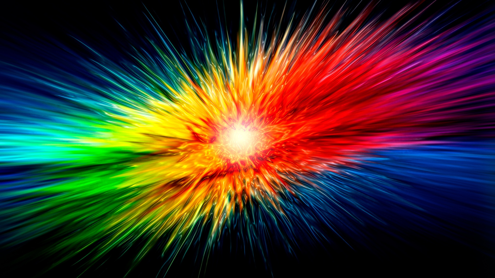
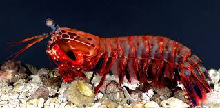

Fatos sobre o Stomatopoda
Vocẽ sabe o que ele é?
O Stomatopoda, também conhecido como camarão mantis ou, cientificamente, como Odontodactylus scyllarus, é um crustáceo marinho carnívoro que vive em orifícios nas profundezas do oceano e se destaca por caçar suas presas com o auxílio de um sentido muito especial: uma visão extremamente apurada, capaz de interpretar polarização tanto no espectro violeta quanto no infavermelho.
13 cores a mais que humanos
Nossos olhos contém células sensíveis a luz, que nos permitem enxergar três cores primárias (verde, azul e vermelho), além de todas as cores que delas derivam. As borboletas são animais explêndidos que conseguem enxergar duas cores a mais que nós, meros humanos, desconhecemos. O Stomatopoda consegue incrivelmente ir além disso: sua visão tem receptores que permitem que ele enxergue nada mais nada menos que 16 cores, algo inimaginável, comparável minimamente a uma bomba nuclear de muita luz e beleza.
Não tão colorido
Apesar do poder de visão desses animais, estudos revelam que eles são muito piores em discriminar cores do que a maioria dos outros animais! Na verdade, os seus receptores reconhecem cores de forma estranhamente parecida com a de alguns satélites.

Lindo, porém fatal
Com toda a capacidade explêndida de detectar cores e a aparência colorida e gloriosa dos camarões mantis, poderia presumir-se que eles são animais dóceis e encantadores. Mas a verdade é que eles são seres noturnos extremamente agressivos, sendo considerados um dos animais mais violentos do mundo! Suas presas frontais são capazes de desferir um dos mais rápidos e fortes golpes do reino animal, com a velocidade de um tiro de calibre 22 (cerca de 80km/h).
